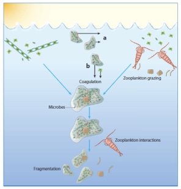

Particle Size Distribution
Particle Size Distribution
Introduction
Particles in the ocean are anything that is not dissolved, including dust, fecal pellets, and fish.?? Particles may be produced in situ, like phytoplankton or fecal pellets, or added to the sea, like dust and logs.?? The size of particles varies over several orders of magnitude, from fine clays and large (macro-) molecules to whales.
In general, there are a lot more little particles than big particles in the ocean.?? Small particles combine to form larger particles, a process known as coagulation.?? Mathematically, coagulation can be described based on the probability that two particles will collide and whether they will stick together.?? Large particles have several different potential fates.?? Large particles may sink out of the ocean and accumulate at the seafoor.?? Or, aggregates, which are large particles made up of dead organic matter, may be broken into small pieces by turbulence or small fish or zooplankton feeding.?? Aggregates also contain bacteria that break down organic matter, causing particles to become smaller.
By counting the number of particles that have a similar size, we can plot the size distribution or spectrum of particles.?? The size spectrum provides a snapshot of the ecosystem of living and non-living particles and their interactions.?? By combining data with models of particle dynamics, we can use the particle size spectrum to study the export of carbon, nutrients, and contaminants from surface seawater, the cycling of material in the ocean, and the interactions between organisms and aggregates.

Particle interactions (Burd & Jackson, 2009).